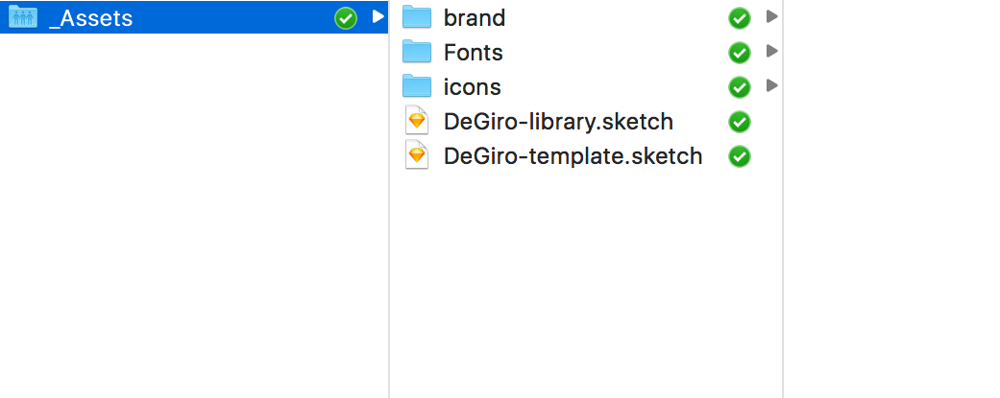

By the time I joined DeDiro, there were already 4 designers (including marketing ones) working in 3 different locations on completely independent tasks. There were no structure nor consistency in their work, the tools and processes were extremely old-fashioned (like designing in XD and communication through email). It was an obvious first project to kick off - try to unite the team and introduce a new way of working.
I don’t think it’s necessary to tell about benefits of having the consistent visual language and working design system, these are buzz words of 2017 and there are tons of articles written. In the core, my design system share exactly the same principles like the mainstream ones. I would like to focus on the technical implementation because it feels like it is not set in stone yet.
The main criteria for choosing the certain tools and flows over alternative ones were:
Might seem obvious for the rest of the world, but it was quite a move for our team as literally no one have tried it. Switching from XD to Sketch was harder then I have expected, last unstable builds did not help.
Cloud storage and version control.
Mainly used for collaboration with steakholders, developers hand-off and easy prototyping.
Product owners' favorite tool.
We keep using Adobe Illustrator for Marketing Design, in Product design I use a lot such tools as Principle and Adobe After Effect and Photoshop for interaction design, JetBrains Webstorm for code, I’ve also used a Symlink tool to hack sketch.
Alternative tools that we have tried but they have not passed our criterias are Abstract and Git (version control), Zeplin for developers hand-off, will tell more about them below.
While being super enthusiastic about discovering new fancy design tools myself, in teams it’s wiser to use stable ones with big communities and many useful integrations.
The reasons why we have switched to Sketch were not because “everyone is using it” and that I would have to sacrifice myself switching to XD, but that it offers vast functionality possibilities and integrations that non of other tools has.
At the time we have started, Sketch has just introduced its libraries in Beta, that would allow of having a single source of truth for UI components and seamless team collaboration. We immediately decided to put it into the center of our Design System.
Rebranding was not our initial goal. The team has just redesigned all the marketing pages and some products design was in progress. It all looked alright and, the most importantly, solved the business goal. The only problem was that it was not scalable and very worked inefficiently in the “team” of independently working designers.
I have started with distinguishing styles, reusable elements and whole blocks from the existing resources and collecting them into one sketch file. This way I have made a proper library foundation that included the color palette, typography, spacing grid and basic UI Kit, neatly arranged into reusable styles and symbols in Sketch.
We can already link it to Sketch as a library and try it out.
Here is the first pain point comes. Sketch Libraries allows to share Symbols, but not styles and color palettes. This has to be done via Sketch template, which create another layer of complexity, but unfortunately the only reasonable way to go.
I have cloned my dear library and remove all the symbols from the version that is meant to the template.
In order to keep template outside of the Sketch App folder (in the Dropbox one in our case), I used a little hack with Symlink, that explained in details here
The problem with the template is that it gets cloned every time and updates of the template would not affect the files that was created with it previously. There are pro’s and con’s - on one hand it keeps old files safe none of the updates would damage old designs. Those, who knows how CSS framework changes can lead to unexpected results all over the place would understand me. But on the other hand it does not move us closer to the dream of the continuously evolving design system. One of the solutions can be turning typography and color styles into symbols and linking them through the library, I have done it partially for button filings and content elements, but overall it sounds too much like a hack. Currently we have to cope with the fact, that if we decide to touch some typography styles and colors, it would have to be done manually in every previously created file and still leads to the risk of inconsistency.
I have left the visual representation of the styleguide in the template file on a separate page, this way every new file created from template would have a copy of it, it can be use as a reminder or removed. Even better, this template file can link to the elements from the Sketch library, I have included buttons and forms for the start. The second page can include some preset layouts or responsive artboards to remind that we should think of screens diversity.
Library contains a selection of UI elements saved as sketch symbols with extensive overrides. This library can be attached to every new or old sketch file, every time something is changed inside the library, all previous versions will get a suggestion to update to the newest version, so if we deiced to use pink buttons instead of blue, we can change in the library and all sketch files linked to it could be updated. This is a very powerful tool, but has to be carefully protected, that’s why we keep it on dropbox with limited access rights.
I have spent quite some time on creating very easy to change components with various overrides. I used the same technique for building UI libraries for Signkick and Snappcar, Primavera UI kit. Button can the perfect example.
Storing the data on the cloud is out of the questions nowadays. Versioning should be too, but apparently it is still not embraced by most of the teams. In the code world it is done with Git, which would be a powerful tool, but in the design environment it would create more problems then solve. The learning curve is too steep, it’s not intuitive for beginners, there are no immediate benefits. So it requires more effort then improves the process. There are new tools like Abstract popping up, they make it easier for a regular designer to learn, but still have some troubles to use, my personal experience with it was quite bias. It did not support Sketch Libraries at their begging, it will probably never support Sketch templates, turned out to remove uncommitted changes if you restart the computer (probably a bug, but costed me days of work and nerve cells before I understood what was happening), and it simply does not feel right when you don’t have direct access to your Name.sketch file.
The alternative was good old Dropbox that has an automatic versioning tool that you never notice before you really need it. It’s probably not the most powerful and flexible tool for bigger teams, access rights settings can be improved, but for a small like ours it’s still the best option and requires zero effort and learning.
I have created an _assets folder and put my template and library files there, along with fonts and other assets used.
By the way, little thing, but I have discovered that different versions of font can break look different and eventually break the sketch files. So I have reinstalled all used fonts on my computers and required the team to do the same.
This is where it gets really interesting. Set of buttons and 8 shades of gray can hardly solve the design inconsistency problem. The library has to be 1) hardwired into design process by every single designer; 2) massively enriched to solve their problems.
More it’s the project of a single person, more personal it gets and harder it becomes for other members to start using them. It is better to involve the rest o the team early on and let them to add the elements they need. It helps not only to start a discussion and allow everyone contribute to the common good, but it would make them learn and understand the logic of the system faster. Often we reinvent the wheel just because we can’t figure out how to use someone else’s one.
It’s good to agree on such rules, like file structure and naming, responsiveness support, using grid, icons etc, frontend limitations. It’s often good to involve developers to explain certain things. For example we happen to use bootstrap on the frontend for marketing pages and it strictly used native bootstrap breakpoints and 12-column grid. Both designers and developers were blaming each other for inconsistent design and not precise implementation, but the problem was solved once designers understood how it works.
Dropbox is a great way to keep the store source files and assets, but it does not always help when you need to present full cases or keep the team in the loop. We use Invision for that. It has much more to offer and too be honest I have not even discovered its full functionality yet. We got everyone in the team using it - the management show can easily show teasers to the investors, our head of products loves leaving comments to UI in the middle of the night, product owners can link directly to Invision prototypes directly from Jira, developers can easily find all they need without begging designers to send that color code or measure the margin, marketing guys create moodboards together with designers, and it just feels cool to show your new cool design directly on the iPhone and watch people amazed that we are working that fast.
We have tried Zepelin and some other tools for developers hand-off, but it gives no benefits over Invision Development tool and since we use the second one anyway, no need to overcomplicate it.
Design can differ a lot depending on what you are designing for. Colors and Typography can be shared between different teams, but UI element on Marketing Pages might have nothing to do with the products ones. That’s why I focused more on creating the proper structure and workflow rather then framing components. The next step would be to create separate libraries for different needs - marketing pages and different products. The great thing about Sketch Libraries is that you can link to several of them.
My next real big thing was the redesign of the whole trader platform. On such project the few things you will probably wanna keep are colors and typefaces, even if them. So the system for the Platform had to be created from scratch on the fly and luckily it would have to be set in stone for a long time.
The next step of the design system has nothing to do with buttons and typography styles, much more then that.
I would start with creating 3+ Sketch files (or one file with 3++ pages in it):
The most of the work is happening in the details file (number 3). It can be one file with multiple pages for different screens/parts, or multiple files. I like to have them on different pages, but the file might become too big and too slow.
For example working on the Dashboard, I would create a Dashboard page with a bunch of artboards on it: low-level prototypes, different resolutions, alternative versions, states, children components, everything related to this part. One of the artboard (13’’) can be transformed into a symbol and reused on the product map and the product journeys files. This way you can always have a high-level view of the product with all the latest updates, and focus on details on the other file. No need to copy-paste and update after every change.
This is also the way I keep files in invision, sorting them my journeys and by parts. With Craft Plugin this process takes seconds.
Most of time waste is happening on this step, unfortunately there are no tools that would provide sleek collaboration between designers and frontenders. I will tell more about our process soon.
Symlink for continuous sketch template updating
https://medium.com/creative-controller/how-to-share-sketch-templates-across-your-design-team-with-dropbox-and-a-symlink-7d6b2e3bbb73
Sketch templates
https://sketchapp.com/docs/templates/
Sketch libraries
https://medium.com/minitheory-design/our-design-workflow-gonna-improve-so-much-with-sketch-libraries-667b66c68446
Sketch libraries and Abstract combined in a design workflow
https://uxdesign.cc/sketch-libraries-and-abstract-combined-in-a-design-workflow-88bdc9fd9789
A way to go - Creating a Design System Language (with big players examples)
https://medium.com/qstream-design/creating-a-design-system-158a2d832551
Concept of atomic design by Brad Frost
http://atomicdesign.bradfrost.com/chapter-2/